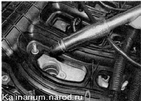
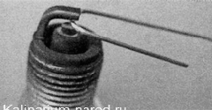

Свечи зажигания - заменаСвечи зажигания заменяем по рекомендации зав ода-изготовителя через каждые 30 000 км пробега или при выходе их из строя, если двигатель стал работать неустойчиво на холостом ходу. Для выполнения работы потребуется: специальный торцовый ключ для свечей зажигания на 16 мм с удлинителем. В головке ключа должна быть установлена резиновая муфта, которая удерживает свечу. Снятие 1. Снимаем катушку зажигания первого цилиндра. 2. Торцовым ключом для свечей зажигания на 16 мм отворачиваем свечу и извлекаем ее из гнезда. 3. Вынимаем свечу из головки ключа. 
Регулировка 4. Перед установкой свечи зажигания набором круглых щупов проверяем зазор между ее электродами. Зазор должен быть 1,0 —1,1 мм. 
При проверке зазора плоскими щупами, результаты замеров будут неправильными. 5. Регулируем зазор подгибанием бокового электрода. Установка Во избежание повреждения резьбы в головке блока цилиндров предварительно свечу следует завернуть от руки и уже после этого затянуть, вставив вороток в удлинитель ключа. Момент затяжки свечи 30—40 Н-м. Вставляем свечу в головку ключа и заворачиваем ее в головку блока цилиндров. Аналогично заменяем свечи остальных цилиндров. |